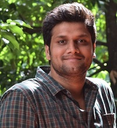

Bio
சூரிய நாராயணன்
I'm Surya Narayanan, 5th year Ph.D. candidate at the University of Utah, advised by Prof. Rajeev Balasubramonian. My research interests include computer architecture, neuromorphic architectures, application specific architecture design, and neural networks. My research primarily lies at the intersection of computer architecture and machine learning.
Email: surya@cs.utah.edu
Reading list